BR — Brazil
The main impact of a 200 basis-point (2.00 percentage-point) rise in United States interest rates on Brazil is a 0.07% drop in GDP by the twelfth quarter — a limited spillover. Brazil ranks seventh by absolute GDP impact and sits in the "minimal" band. The shock is a US monetary tightening, and Brazil's response is a slow-building, modest drag rather than a sharp contraction. GDP (real GDP) falls just 0.0018% in Q1, deepens gradually to a trough of −0.0693% in Q12, and is still −0.0132% below baseline by Q20, so the hit has largely faded but not fully closed within the horizon.
Demand and trade. Household consumption declines steadily, reaching −0.031% around Q13 and easing to −0.0078% by Q20 — a persistent but small drag on the consumer. Private investment is the hardest-hit domestic demand component: it falls 0.0206% in Q1, peaks at −0.2097% in Q9, then recovers so strongly that it turns positive by Q19 (+0.0099%) and ends Q20 at +0.0266%, as the cost-of-capital shock unwinds. Net exports (the trade balance) actually improve, peaking at +0.0311% in Q8 before fading to +0.0061% by Q20 — the weaker real activity and stronger currency dynamics leave the external balance modestly better, not worse. Government spending barely moves, peaking at just +0.01% in Q11, a negligible fiscal offset. Government debt drifts down to −0.0107% around Q19, reflecting the small primary-balance improvement rather than any active fiscal response.
External / FX. The real exchange rate (currency strength) appreciates sharply, rising 0.1114% in Q1 to a peak of +0.677% in Q10, then easing to +0.2903% by Q20. This is the dominant transmission channel: a stronger real exchange rate makes Brazilian exports less competitive, which is consistent with the modest net-export gain being driven more by compressed imports than by export strength. The currency appreciation and the trade-balance improvement line up as a real-income effect rather than a competitiveness gain.
Labour. Employment falls gradually, from zero in Q1 to a trough of −0.0426% in Q16, ending Q20 at −0.0326% — a slow labour-market deterioration that lags the output trough. Unemployment rises correspondingly, peaking at +0.0136 percentage points in Q14 and easing to +0.0069pp by Q20. Real wages initially rise — peaking at +0.028% in Q10 — as inflation cools faster than nominal wages, then turn negative after Q16 and end Q20 at −0.039%, so the real-wage gain is temporary and reverses into a loss.
Prices. CPI inflation rises early, peaking at +0.0143 percentage points in Q2, then decelerates and turns negative by Q10, ending Q20 at −0.0059pp. Domestic inflation follows a similar arc, peaking at +0.01pp in Q2 and turning negative by Q10, ending at −0.0041pp. Firms' marginal cost falls steadily, peaking at −0.0414% in Q12 and ending Q20 at −0.0079%, consistent with the disinflationary demand drag.
Financial conditions. The local policy rate initially rises — peaking at +0.0444pp in Q5 — as the central bank leans against early inflation, then turns negative after Q11 and ends Q20 at −0.0365pp, a net easing as the growth drag dominates. Government 2-year yields rise early (+0.0349pp in Q1), peak at −0.0411pp in Q14, and end Q20 at −0.0205pp. Government 5-year yields fall throughout, peaking at −0.0238pp in Q11 and ending at −0.0074pp. Government 10-year yields fall modestly, peaking at −0.0103pp in Q11 and ending at −0.0022pp. Bond prices fall to −0.2333% in Q8, then recover strongly and turn positive after Q13, ending Q20 at +0.1523%. The equity index falls to −0.4453% in Q8 and recovers to −0.0389% by Q20. Tobin's Q (the value of installed capital) falls to −0.1468% in Q9, turns positive by Q19, and ends Q20 at +0.0187%. House prices decline steadily to −0.0682% around Q17 and end Q20 at −0.061%. Bank credit supply contracts modestly, peaking at −0.0068% in Q17 and ending at −0.0065%. The lending spread widens only marginally, peaking at +0.0003pp in Q17 — a negligible credit-cost effect.
Sectoral and capital. Services GDP falls to −0.0458% in Q12 and ends Q20 at −0.0087%. Manufacturing GDP is hit much harder, falling 0.0338% in Q1 to a trough of −0.2095% in Q10, and remains −0.0861% below baseline at Q20 — the tradable sector bears the brunt of the currency appreciation. The capital stock declines gradually to −0.0105% around Q18 and ends Q20 at −0.0103%, a slow depreciation effect from weaker investment.
Timing. The GDP hit is largest in Q12 at −0.0693%, and by Q20 it has mostly faded to −0.0132%, though it has not fully closed. The equity and bond-price troughs arrive earlier, in Q8, while the labour-market and capital-stock troughs arrive later, in Q14–Q18 — a classic sequence of financial shock first, real effects later.
Close. These are model impulse responses relative to baseline, not forecasts. They describe how Brazil's economy deviates from its no-shock path under a 2.00 percentage-point US rate rise, with the currency channel doing most of the work and the real-economy drag remaining modest. Number check vs JSON: GDP peak -0.07%, CPI 3y +0.08pp, equity peak -0.45%.
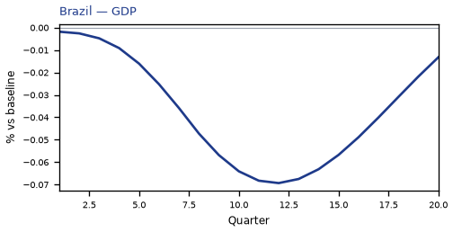
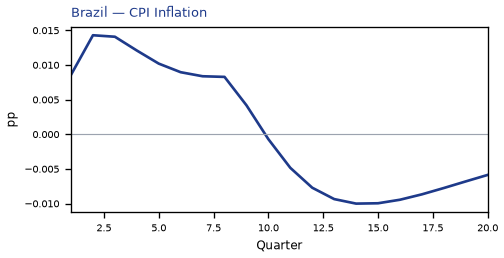
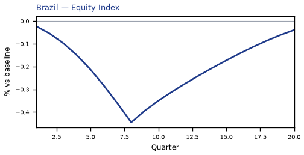
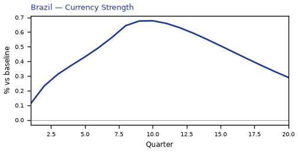
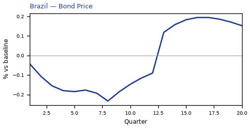
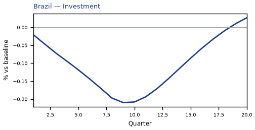
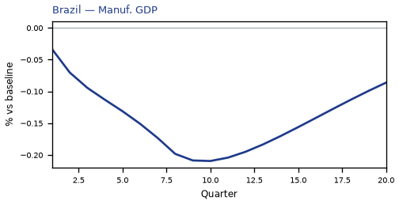
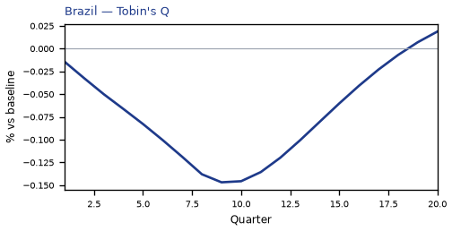
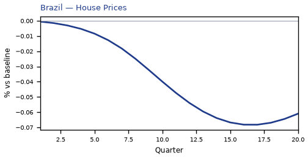

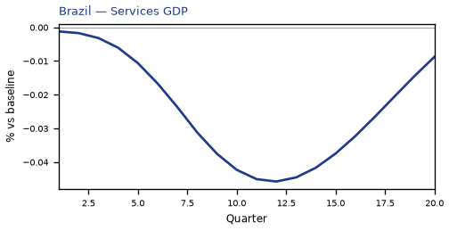
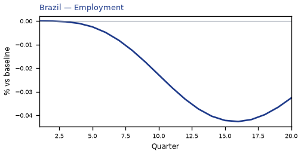
source=live · global_macro_v5 · contract v6 · Q1–Q20 JSON · not financial advice